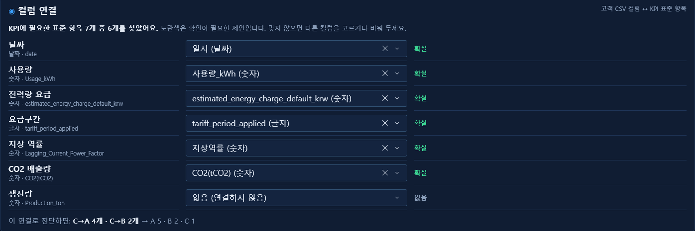
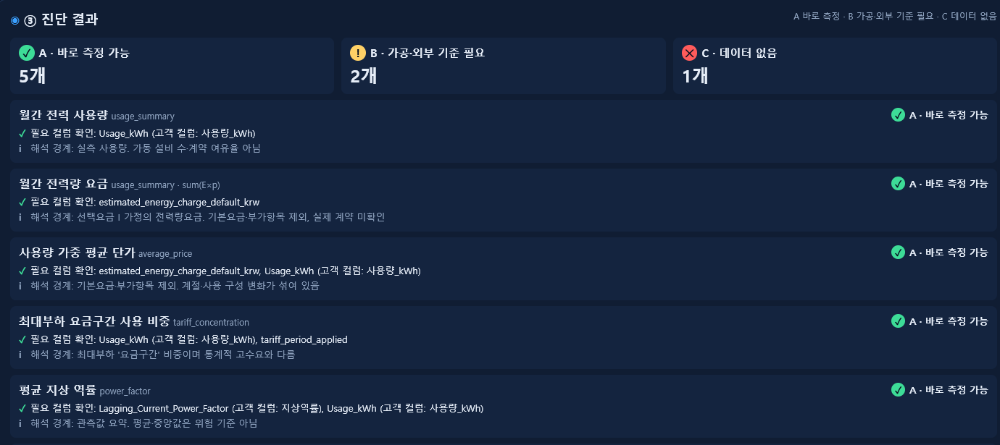
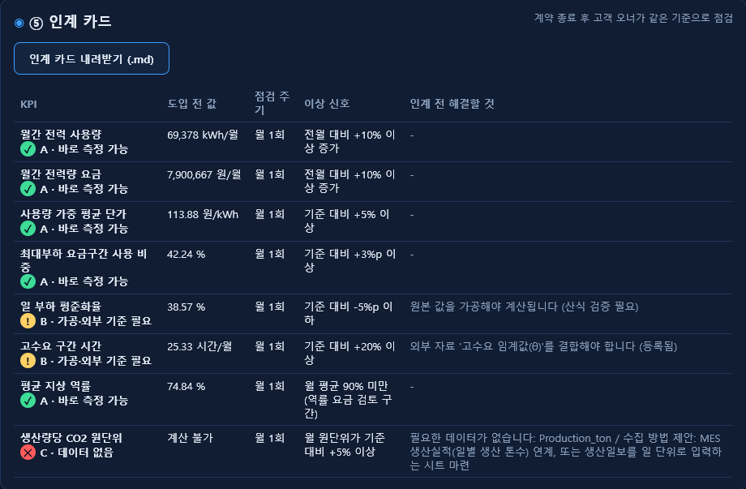
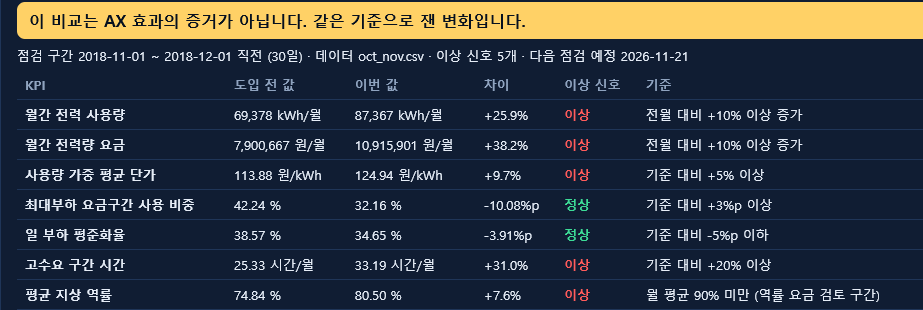

계약이 끝나도 같은 기준으로 성과를 재게 돕는 KPI 진단 도구
AX 컨설팅은 검수로 끝나지만 성과는 그 뒤 현업에서 나온다.
핵심 문제
원인 세 갈래
신입 AX 컨설턴트가 과제를 시작할 때 쓰는 KPI 진단 도구
가치 제안
KPI는 회의에서 말로 정하고 산식은 사람마다 다르다.
같은 규칙으로 등급과 도입 전 값을 내고 고객에게 남긴다.
02 · 컬럼 연결

E2E 테스트 실행 화면 · 2026-10-21 · 컬럼 이름을 바꾼 HS1 CSV
04 · 진단 결과

E2E 테스트 실행 화면 · 2026-10-21 · 기준일 2018-10-21 · KPI 8개 중 5개 표시
04 · 인계 카드

고객 오너 계정(읽기 전용) 화면 · 인계 카드는 .md로 내려받는다 · E2E 테스트 실행 화면 · 2026-10-21
계약 후 점검

E2E 테스트 실행 화면 · 2026-10-21 · 새 데이터 oct_nov.csv를 도입 전 값과 비교
사용자
출처: HS1 가공 데이터 35,040행 (15분, 2018-01-01 ~ 12-31) · 2026-10-19 실행
범위
남은 질문
이번 주 현직 컨설턴트와 커피챗에서 확인한다. 없었다면 이 앱이 필요하다는 근거가 된다. 있었다면 인계 카드의 고객 오너 칸이 더 중요해진다.
hs1-ax-kpi.vercel.app · 팀 HS1